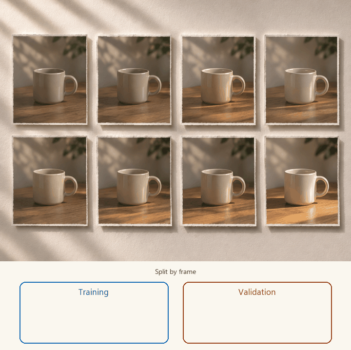
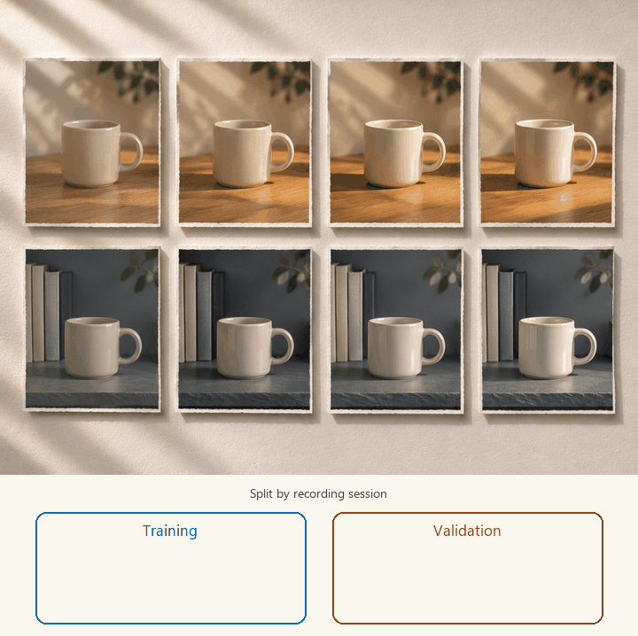

CS231n — I’d Check the Split Before I Changed the Network
There’s a line in an image-classification pipeline that’s easy to skim past. You shuffle the examples and split them into training and validation sets. Next to the network architecture, it hardly looks like a design decision.
Now imagine the examples are frames from a phone video. A frame from one instant lands in training. The frame a fraction of a second later lands in validation. The object has barely moved. The lighting, the desk, and the camera are all the same. If the model gets the validation frame right, what exactly did I just test?

The split can be right in Python and wrong for the experiment
The split function can do exactly what I asked. Every frame has a unique index, none of the indices are shared, and the class counts look balanced. The problem is that a unique row in a dataset is a very weak definition of a new example.
I picture a mug I filmed for thirty seconds without moving very much. If I put frames from that clip on both sides of the split, the network sees the same mug, the same shadows, and often the same outline at almost the same pixel coordinates. A high score here could reflect real recognition, familiarity with the scene, or some mixture of the two. I have no clean way to tell from the score.
The unit I’d split on depends on what I want to generalize to. To test a new recording of the same objects, I’d split by session. To test whether the network knows what a mug is when I give it a different mug, I’d also hold out physical objects. Grouping by session alone would still let the same favorite mug show up on both sides.
That question made me think differently about a high validation score. A random split might tell me that the model can classify another frame from a scene it already knows. If I want to know whether it can work in a new room, I need to hold out entire scenes. Both scores can be honest. The split determines which question the score answers.
A background test I’d actually trust
I’d be tempted to take a few bad predictions and say the network learned the background. That’s a good suspicion, but it leaves too many other things changing at once. New rooms also mean different light, camera distance, and clutter.
A small paired test feels more useful. Keep the camera and object fixed and swap the surface or backdrop. Then keep the background fixed and swap the object. I’d look at whether the predicted class changes when it should, and how often it changes when it shouldn’t. A model that calls a stapler a mug whenever it’s on the oak desk has just given me a failure I can try to fix.
I’d also keep a final set of sessions untouched while I make those fixes. If I keep checking the same few recordings and choosing whatever settings work there, I’ve quietly started tuning to those recordings too.
I’d try this with a small object classifier. Film the same kinds of objects on a few different surfaces, then train the same network twice: once with a random frame split and once with whole recording sessions held out. For the held-out sessions, I’d look at individual mistakes. Does it still recognize the object when I move it from a pale desk to a dark shelf? What happens when I change the background and leave the object alone?

What I’d change first
If the grouped score drops, a bigger model is one possible response. My first move would be to watch some of the clips the model got wrong. If all the mugs in training were filmed from above, and every missed mug is shown from the side, I know what I’d film next. I’d add more angles and run the same network again. If that helps, I have a much more actionable explanation than saying the first architecture wasn’t powerful enough.
The toy setup is deliberately small. The habit carries over: before choosing a harder model, find out what makes the evaluation hard.
The useful part for me is how little model code needs to change. I can keep the same architecture and loss, change how I assign the data, and learn something different about what the network is doing. Now, when I see a strong validation score, I want to know what the model had to recognize on its own. Stanford CS231n